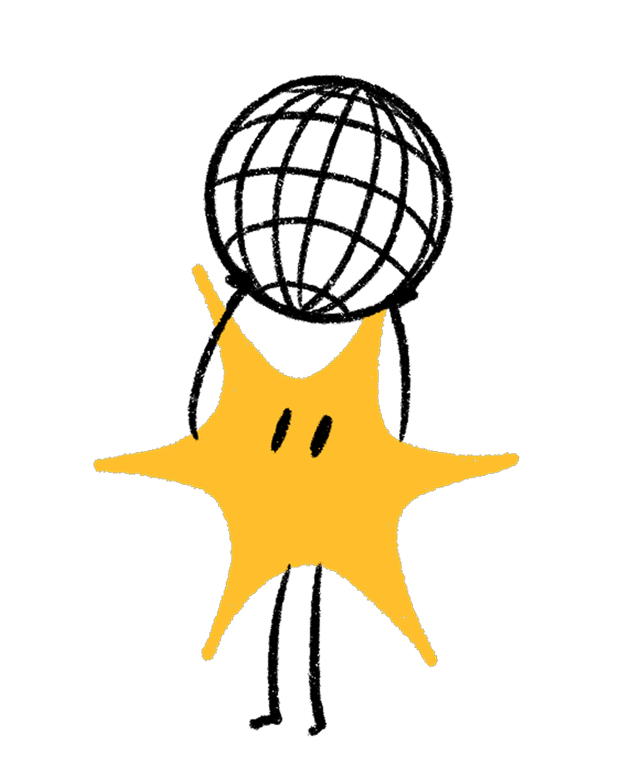

Dal testo al token, dalla probabilità alla risposta
~55 minuti — il cuore tecnico della formazione
Leggono token — frammenti di testo
Il meccanismo fondamentale di ogni LLM

Come il modello sceglie tra i token possibili
Il modello sa tutto, ma completa solo il testo

Il modello impara a rispondere a domande: viene allenato per essere una chat
Il modello viene allineato (RLHF) e specializzato (RLVR)
Distillazione e quantizzazione — perché esistono modelli economici
Il meccanismo di Attenzione — l'innovazione chiave dei Transformer¹
Conseguenze pratiche per il vostro lavoro quotidiano